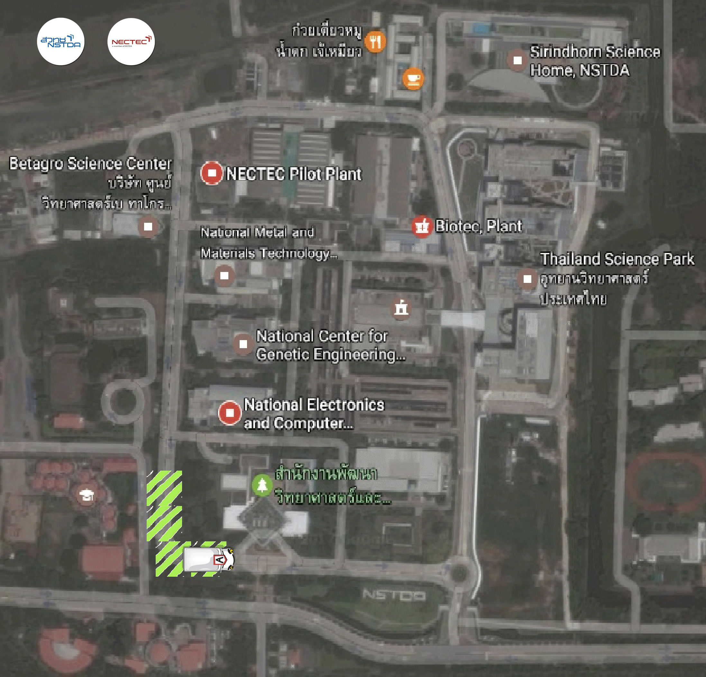
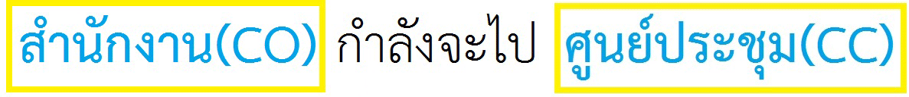
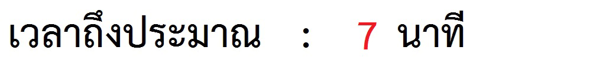

เผนที่


ตำเเหน่งที่คุณอยู่ปัจจุบัน
สำนักงานพัฒนาวิทยาศาสตร์และเทคโนโลยีแห่งชาติ(CO)
ศูนย์ประชุมอุทยานวิทยาศาสตร์ประเทศไทย (CC)
BIOTEC PILOT
บ้านวิทยาศาสตร์สิรินธร(SSH)
MTEC
BIOTEC
NECTEC

แผนที่
กราฟ
แจ้งเตือน
สุขภาพ
ผู้ใช้งาน